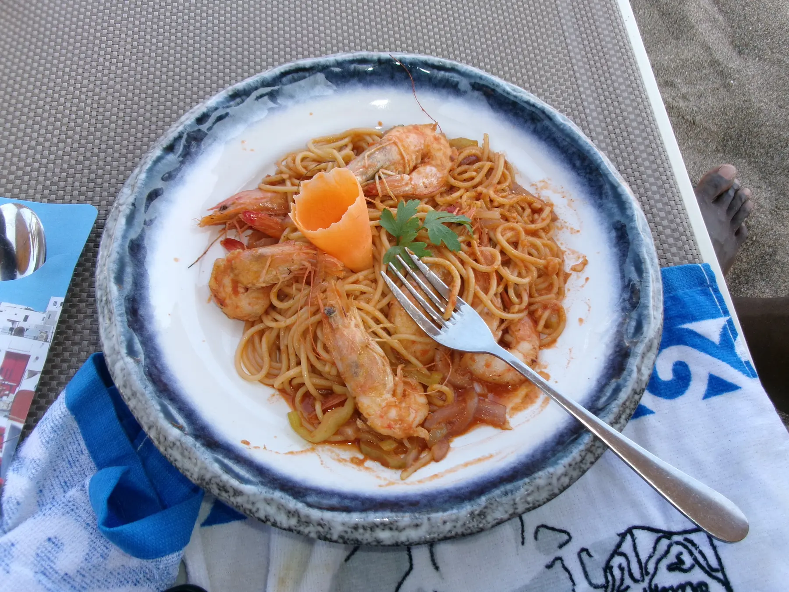

Shrimp pasta

Ingredients
- 500g king prawns
- 400g pasta, spaghetti or tagliatelle
- 1 tbsp. olive oil
- 6 garlic cloves
- 2 tbsp. butter
- salt and pepper
- 100 ml white wine
- 350 ml cream
- 1/2 parmesan cheese
- fresh parsley, chopped
Steps
- Cook the pasta according to instructions on the package
- Heat oil on a pan and cook the shrimp with salt and pepper for about 2 minutes on each side or until they turn pink, then remove them from the pan.
- Add the butter and garlic to the oil and let i cook for a while over low heat.
- Next, add the cream and the white wine and bring to a boil. Then add the grated parmesan cheese.
- When the cream has thickened a bit, add the shrimp back to the pan and salt and pepper if needed.
- Add the pasta to the pan and mix well.
- Serve with parsley and grated parmesan cheese.